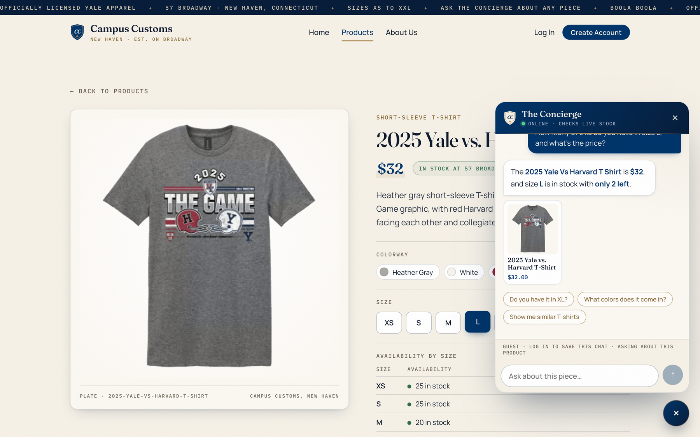
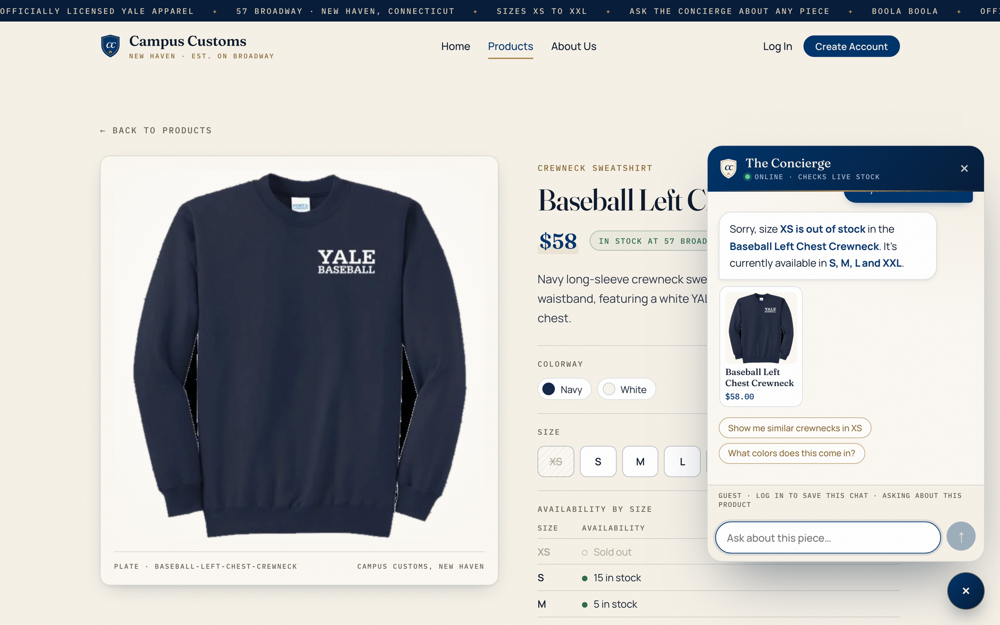
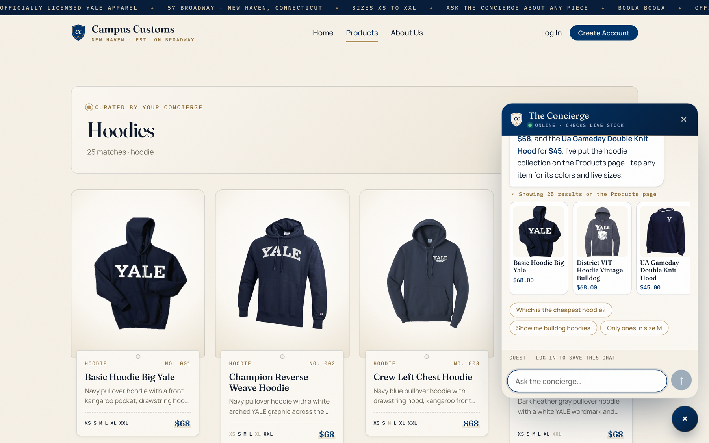
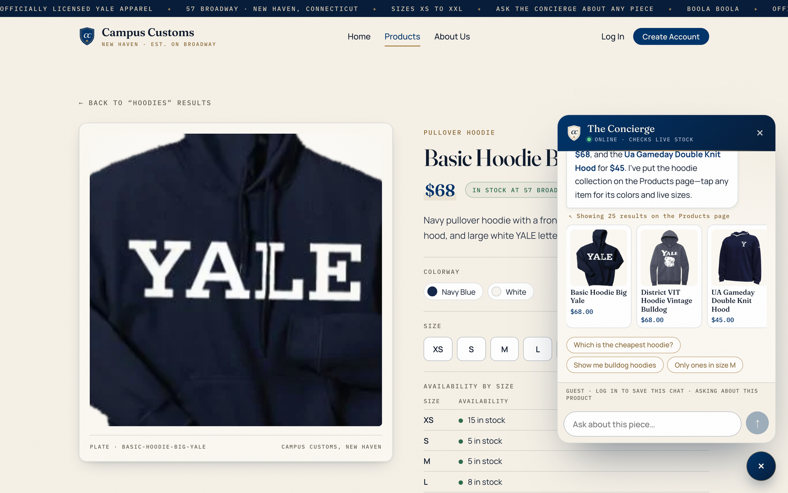
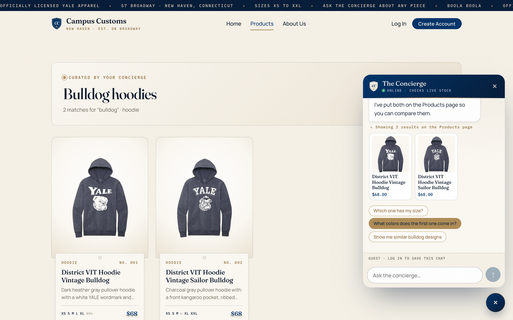

Campus Customs — App Check
1. Chat checks an item's inventory level (honest stock & price from the DB) PASS

What this proves: asked “How many of this do you have in size L, and what's the price?”, the Concierge replied “The 2025 Yale Vs Harvard T Shirt is $32, and size L is in stock with only 2 left.” — exactly the database values (size L quantity = 2, price = $32), matching the page's own “Availability by size” table.
Database (/api/products/2025-yale-vs-harvard-t-shirt) | 2025 Yale Vs Harvard T Shirt · size L: quantity 2 · price $32.00 |
|---|---|
| Agent tool calls (audit trail) | check_stock(size="L") → “Size L … is in stock, but only 2 left.” and get_product_details → $32.0 |
Also checked: a sold-out size is reported clearly

2. Dynamic search-result cards after a category question PASS

What this proves: the agent searched the catalogue and returned structured product matches; the front end rendered 25 hoodie cards (image, name, price, short description, sizes in stock) under the “Curated by your Concierge · Hoodies” banner, and the chat confirms “Showing 25 results on the Products page”.
| First cards | Basic Hoodie Big Yale, Champion Reverse Weave Hoodie, Crew Left Chest Hoodie, District VIT Hoodie Vintage Bulldog |
|---|---|
| Clicking a card | opened the single-item page /products/basic-hoodie-big-yale (Problem 3 behaviour still works — see below) |
Card click → product detail page

3. Usability feature (Problem 9): typo-tolerant search + quick-reply chips PASS
What this proves: the misspelled “hoddies” was auto-corrected by the search tool, so the shopper still got 25 hoodies on the page (“Yale hoodies”) instead of “we don't sell that”, and the reply ends with tappable follow-up chips: Which hoodie has a bulldog design? · Show me hoodies in size M · Which one is navy?.
Tapping a chip sends it immediately
